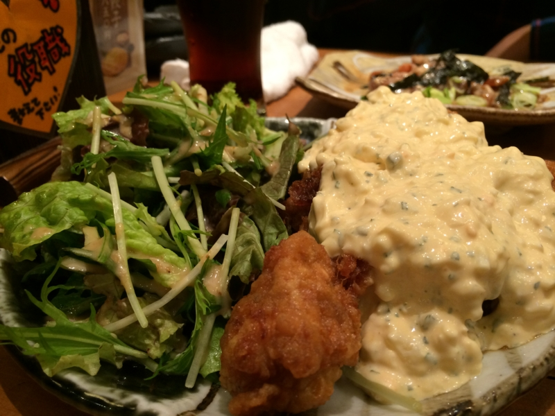
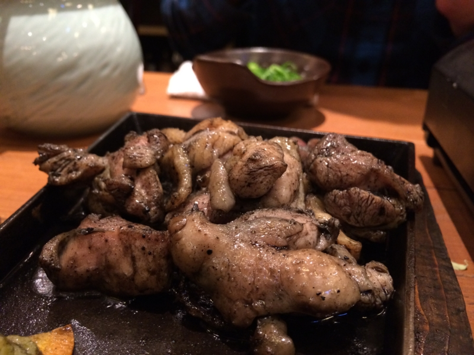
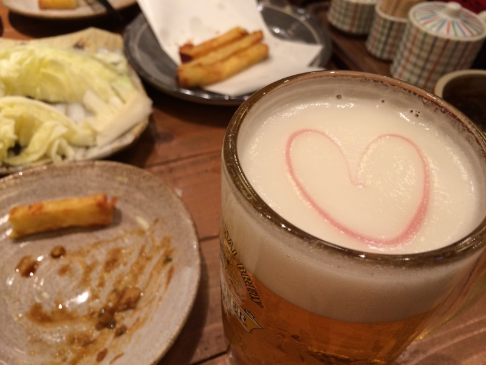
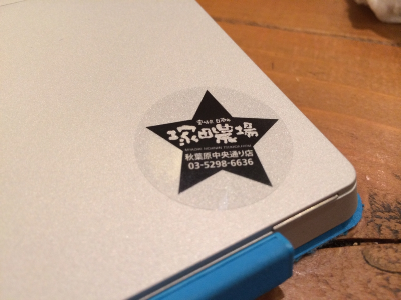

宮崎県日南市 塚田農場 秋葉原中央通り店にいってきた＋グロサミのおみやげ
公開日：
はてなブログにここ数日ログインできなかった件について - だるろぐ などの騒動もあって割りと書くのを忘れていたのだけど、ちょっとまえに 宮崎県日南市 塚田農場 秋葉原中央通り店（秋葉原/居酒屋） - ぐるなび へ行ってきた。
@shibayan によるとテレビでも紹介されていたのだそうな。グロサミへ行く（帰る？）途中の飛行機の中で見たとか見なかったとか。


ココはご飯もフツーに美味しいのだけど、なんせ接客が熱い。あんまり無理せんでええでって思うのだけど、なんかノリがいいし、釣られてホイホイとビール飲んじゃう。

イケメン店員さんが生ビールにハートマーク書いてくれたりとかな。ノンケのオレでも惚れてまうで。

あと、初来店記念のデザートくれたりとかな。「大阪生まれで築港にもばあちゃんいるのにユニバーサルスタジオ行ったことないねん！」って言う話を少ししたら、チョコでなんかユニバーサルスタジオの絵をかいてくれた。まじイケメン。

あと、帰りしなにシール（Surface 2 に貼ったった）や味噌（これが割とうまい）、カードをもらった。このカードは店に通い詰めるとポイントがたまり、主任から社長へと出世できるのだそうだ。おもしろいし、課長までぐらいには出世したいと思った。リアルワールドでもお酒飲むだけで出世してお給料が増えたらいいのに。
あと、この日ではないのだけど @shibayan から MVP Summit 2013（http://www.2013novembermvpsummit.com/）のお土産をもらった。
Microsoft Office の T シャツは割りといいな。来年の夏までとっておこう――それまでにロゴが変わったりしなければいいが。
握るとケラケラと笑う人形は、正直扱いに困る。ムカついたときに殴ればいいんだろうか。